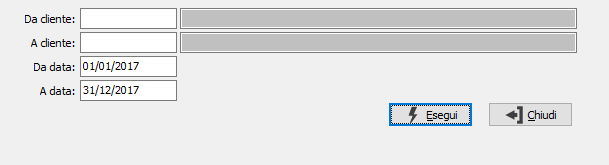

Lista certificazioni da ricevere (professionisti)
Il programma effettua una stampa che consente di controllare le certificazioni che i professionisti devono ricevere dai loro Clienti, in modo da avere un valido supporto per il controllo da eseguire al momento della redazione della dichiarazione redditi del Cliente.

DA CLIENTE: codice del cliente da cui si desidera iniziare la stampa. Confermando a vuoto, la selezione inizia con il primo cliente valido. Sul campo è attivo lo zoom F9.
A CLIENTE: codice del cliente con cui si desidera concludere la stampa. Confermando a vuoto, la selezione termina con l’ultimo cliente valido. Sul campo è attivo lo zoom F9.
DA DATA: Indicare l’eventuale data da cui si desidera iniziare la stampa. Viene proposta la data di inizio esercizio.
A DATA: Indicare l’eventuale data a cui si desidera terminare la stampa. Viene proposta la data di fine esercizio.